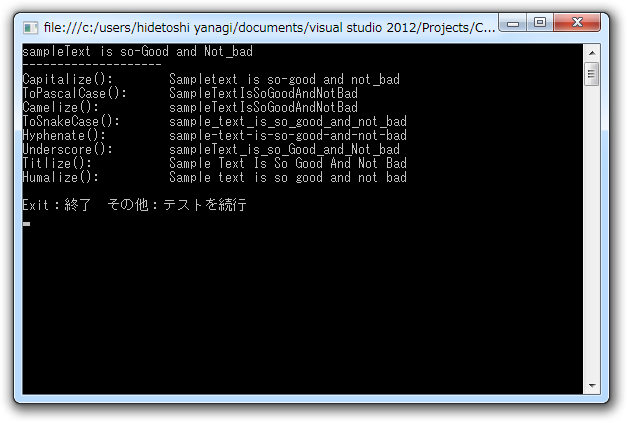

寄り道: string クラスの拡張
公開日：
WebMatrix でユーザー認証機能（3） ―― なにはともあれユーザー登録しないと始まらん - だるろぐ の脱線。
個人的には
<fieldset> <legend>Register Your Account</legend> @this.RenderTextWithValidation( "name", "Name", new { Value = name} ) @this.RenderPasswordWithValidation( "password", "Password") @this.RenderPasswordWithValidation( "confirmPassword", "Confirm Password") <input type="submit" value="Register" /> </fieldset>
って書くのがイケてない。「"password", "Password"」だの、「"confirmPassword", "Confirm Password"」だの、おんなじこと二回も書きたくないじゃん。あと、 HTML 要素の class や id は勝手にハイフン区切りにしてほしい。 Ruby on Rails にはソレ系のユーティリティが用意されているので楽なんだけどな（ActiveSupport）。
まぁ、なければ作れって話だ。
まず、あると便利な拡張メソッドを作っていく。先頭を大文字、後を小文字にする Capitalize() は欲しいよね。
public static string Capitalize(this string target) { return target.Length > 1 ? char.ToUpper(target[0]) + target.Substring(1, target.Length - 1).ToLower() : target.ToUpper(); }
char.ToUpper() を 'a'.ToUpper() にしたいが今日のところは面倒なので許してやろう。
さぁ、どんどん作っていくよ！ つぎは痴漢系、もとい置換系だな。 C# （.NET Framework）ってちょっと文字列操作系のメソッドが充実してもいいと思う。
public static string Gsub( this string target, Regex r, string replacement) { return r.Replace(target, replacement); }public static string Gsub( this string target, Regex r, MatchEvaluator m) { return r.Replace(target, m); }
public static string Gsub( this string target, string pattern, string replacement) { return target.Gsub(new Regex(pattern), replacement); }
public static string Gsub( this string target, string pattern, MatchEvaluator m) { return target.Gsub(new Regex(pattern), m); }
これの何が便利かというと、
public static string Underscore(this string target) { // 空白やハイフンをアンダースコアに置き換える return target.Gsub(@"[ -]", "_"); }
みたいに使える。 string.Replace() みたいに手軽で、それでいて強力！ 場合によっては、第一引数に正規表現を渡してもいいし、第二引数で Match を引数にとったラムダを使ってもいい。ホントのことを言えば C# にも正規表現リテラルがあると嬉しいのだけれどね……
private static string DivideIntoWords( this string target, string separator = " ") { return target.Gsub( @"([\w-[A-Z]])([A-Z])", string.Format("$1{0}$2", separator) ); }
あと、こんなのも作ってみた。これは「HelloWorld」を「Hello World」に分割する。第二引数を渡せば、「Hello_World」や「Hello-World」も作れる。こいつらを使って、 PascalCase （UpperCamelCase）に変換する拡張メソッドを作ってみよう。
static readonly char[] SPACE_AND_DELIMITTER = " -_".ToArray(); public static string ToPascalCase(this string target) { return target // sampleText_is-Cool .DivideIntoWords() // sample Text_is-Cool .Split(SPACE_AND_DELIMITTER) // { sample, Text, is, Cool } .Select(_ => _.Capitalize()) // { Sample, Text, Is, Cool } .Combine(); // SampleTextIsCool } public static string ToUpperCamelCase(this string target) { return target.ToPascalCase(); } private static string Combine( this IEnumerable<string> target, string separator = "") { return string.Join(separator, target.ToArray()); }
Combine() はメソッドチェーンを切らずに string.Join() したいので作った IEnumerable<string> の拡張メソッドで、@xin9le さんが命名してくれた。
同様にして CamelCase（LowerCamelCase）も作れる。
public static string Camelize(this string target) { return target .DivideIntoWords() .Split(SPACE_AND_DELIMITTER_CHARS) .Select((_, i) => (i == 0) // <-- カウンターを使う ? _.ToLower() : _.Capitalize()) .Combine(); }
1回目（i == 0）のときだけ ToLower()、あとはさっき作った Capitalize() すればいいね。
今まで知らなかったのだけれど、 Enumerable.Select(Func<TSource, Int32, TResult>) （http://msdn.microsoft.com/ja-jp/library/bb534869）を使うと「今何回目の処理をしているか（インデックス）」が取得できるのね。 Ruby の map {|i| ... } みたいなものかな。
public static string Titlize(this string target) { return target .Gsub(@"[_-]", " ") .DivideIntoWords() .Split(SPACE_AND_DELIMITTER) .Select(_ => _.Capitalize()) .Combine(" "); } public static string Humanize(this string target) { return target .Gsub(@"[_-]", " ") .DivideIntoWords() .Split(SPACE_AND_DELIMITTER) .Select((_, i) => (i == 0) ? _.Capitalize() : _.ToLower()) .Combine(" "); }
あとは僕の望みの、Titlize() や Humanize() も作ってみた。メソッド名は ActiveSupport から拝借。

"man from the boondocks".Titlize() # => "Man From The Boondocks" "man from the boondocks".Humanize() # => "Man from the boondocks""x-men: the last stand".Titlize() # => "X Men: The Last Stand" "x-men: the last stand".Humanize() # => "X men: the last stand"
"TheManWithoutAPast".Titlize() # => "The Man Without A Past" "TheManWithoutAPast".Humanize() # => "The man without a past"
"raiders_of_the_lost_ark".Titlize() # => "Raiders Of The Lost Ark" "raiders_of_the_lost_ark".Humanize() # => "Raiders of the lost ark"
CSS text-transform の capitalize に相当する処理が Capitalize() ではなく Titlize() なのが罠といえば罠。